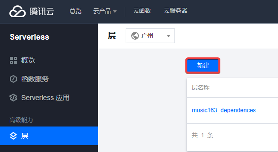

部署
推荐方式: 直接查看 GitHub 文档进行部署。
代替方式: 如果 GitHub 无法访问或者不想使用 GitHub Actons 部署到云函数，可以用以下方式部署。使用这种方式部署不保证代码是最新的：
创建层

层名称可自己决定，点击上传，上传刚刚下载的依赖文件，点击添加运行环境， 把 Python 3.6 勾选上，最后点击确定完成创建
创建函数
下载代码文件，密码: h2jj
在函数服务新建函数
选择从头开始，函数名称可以自己决定，运行环境选择Python3.6，记住不能选择 Python 3.7，因为 Python 3.7 及之后版本，云函数平台不再额外内置依赖库，提交方法选择本地上传zip文件。点击上传，上传刚刚下载的代码文件。

继续下拉，点击高级配置，将执行超时时间修改为 900 秒。内存默认是 128MB，可以不改，也可改为 64MB。在腾讯云API 密钥管理新建密钥，获取 SecretId 和 SecretKey。然后填写如下的环境变量
| key | value |
|---|---|
| SONG_NUMBER | -1 |
| TENCENT_SECRET_ID | 填写上面获取的 SecretId |
| TENCENT_SECRET_KEY | 填写上面获取的 SecretKey |
继续下拉，点击添加层
选择刚刚创建的层

最后点击完成结束函数的创建。
设置
在函数服务点进刚刚创建的函数

点击触发管理，再点击创建触发器，一共需要创建两个触发器。
第一个触发器定时任务名称可以使用默认名称，触发周期选择自定义触发周期，Cron表达式填写触发时间，比如 0 30 0 * * * * 表示每天 0 点 30 分自动运行，0 20 12 * * * * 表示每天 12 点 20 分自动运行，0 0 12,16 * * * * 表示每天 12 点和 16 点各运行一次。
第二个触发器定时任务名称必须修改为 timer-songnumber，触发周期选择自定义触发周期，Cron表达式填写 10 0 0 * * * *。第二个触发器的作用是在每天 00:00:10 时抓取听歌数量并填写到环境变量中。如果不需要刷等级，可以不创建该触发器，或者关闭该触发器。
创建完毕后即可看到两个定时触发器
点击函数管理、函数代码，再点进 config.json 这个配置文件
可以看到有很多错误提示，所以要将语言模式改为 JSON with Comments。
然后就可以对配置文件 config.json 进行修改。配置的含义都做了注释。修改完毕后，点击部署，看到部署成功后点击测试进行测试。